For review · ConfidentialA plain review of Koltiva's offer, what it means for the Verdant Foods platform, the options open to Verdant, and the risks of each.
Verdant does not have to choose between Koltiva and its own platform. Koltiva's own process accepts farm data from other systems, so Verdant can keep its platform as the main record and use Koltiva where it adds something Verdant cannot easily do alone.
| # | Decision | Our advice |
|---|---|---|
| 1 | Which path: use Koltiva instead of building, build alone, or build and partner? | Build and partner |
| 2 | Does Verdant plan to trade cocoa, coffee or other export crops, or sell into the EU, in the next two years? | If yes, Koltiva's export tools become much more valuable |
| 3 | Should Verdant reply to Koltiva now? | Yes, open to a scoped pilot conversation |
| 4 | Who will review the partnership agreement? | A lawyer, before anything is signed |
Koltiva is a Swiss agritech company working in 94 countries with large buyers such as Mars, Nestlé and Cargill. Its tools mainly help big companies prove where export crops come from.
| Verdant needs | What Koltiva gives | Fit |
|---|---|---|
| Fresh vegetables for Ghana | Built around export crops: cocoa, coffee, palm oil, rubber | Partial |
| Consumer marketplace and QR story page | No consumer shop or public product story | No |
| B2B buying for hotels and chefs | Trading tools aimed at commodity buyers | Partial |
| Farm and plot records | Strong, proven at large scale | Strong |
| Field team to onboard farmers | Field agents, with an office in Ghana | Strong |
| Savings groups (VSLA) | Own savings and loans products, which would compete with Verdant's | Overlaps |
| Export and EU proof | Satellite checks and due-diligence statements | If needed |
Farms, plots, harvests, handovers, QR pages, marketplace, B2B buying, savings groups
Field agents, satellite land checks, EU paperwork, buyer introductions
These are things that would take Verdant a long time or a lot of money to build or do itself.
Their agents could register farmers, walk plot boundaries and run training, using Verdant's own app. Koltiva already has an office in Ghana.
When: now, if Verdant wants to onboard many farmers quickly.
Their land-use tracker and due-diligence statements took years to build. The EU deforestation rules cover cocoa, coffee, palm oil, rubber, soy, cattle and wood, not fresh vegetables.
When: only if Verdant moves into those crops or EU exports.
Koltiva works with very large food companies. Verdant's traceable produce could reach some of them through Koltiva.
When: once Verdant has steady volumes and quality.
Support for standards such as GlobalG.A.P. or Rainforest Alliance, and emissions data that large buyers must report.
When: when buyers start asking for certificates.
Koltiva's process takes farm data from other systems by direct connection or spreadsheet upload. This means Verdant can stay the main record and send them only what a service needs. Our design already stores farm maps and records in standard formats so any partner can connect later.
Most risks in a partnership like this come from the agreement, not the technology. Each risk below has a protection Verdant should ask for in writing.
| Risk | What it could mean | Protection to ask for |
|---|---|---|
| Losing control of farmer data | Farmers become part of Koltiva's network and can be approached for other products. | Data belongs to Verdant and the farmers. Use only for the agreed service. |
| Being locked in | Hard to leave if prices rise or the service is poor. | Right to export all data at any time, in open formats. |
| Being blocked from building | An agreement that stops Verdant offering its own traceability, payments or savings tools. | No exclusivity and no non-compete clause. |
| Competing savings and loans | Their fintech products overlap with Verdant's savings groups (VSLA). | Keep fintech out of the partnership scope. |
| Unclear costs | Per-farmer fees grow as Verdant grows. | Fixed pilot price, clear pricing for scale. |
| Two apps for farmers | Farmers get confused using Verdant's app and Koltiva's app. | Field agents use Verdant's app. |
| Ownership of custom work | Anything built for Verdant ends up owned by Koltiva. | Work paid for by Verdant belongs to Verdant. |
| Data protection law | Sharing farmer data without consent breaks Ghana's Data Protection Act, 2012 (Act 843). | Farmer consent, and both parties registered with the Data Protection Commission. |
If Verdant later needs export proof or a large field team, building those alone will be slow. Keeping a good relationship with Koltiva now keeps that door open.
| # | Question | Why it matters |
|---|---|---|
| 1 | Can Verdant use only your field services, with its own software? | Shows whether they will act as a partner or only sell their platform |
| 2 | How do you charge: per farmer, per year or per service? | Shows the true cost as Verdant grows |
| 3 | Who owns the data, and can we take all of it at any time? | Protects against lock-in |
| 4 | Can you connect to our system directly? | Keeps Verdant as the main record |
| 5 | What have you done with fresh vegetables for local markets? | Tests fit with Verdant's crops |
Dear [Name],
Thank you for your follow-up and for sharing Koltiva's profile. Verdant Foods is building its own digital platform, including traceability, and we would like to explore where Koltiva could support it, especially field services and access to buyers.
We would welcome a meeting to discuss a small pilot with a clear scope. Before then, could you share how you price your services, how data ownership is handled, and whether you can work with data from our own system?
Kind regards,
David
Verdant Foods
NEXKOOMSON continues building the Verdant platform, including the stronger traceability features, as planned.
This paper is a strategic view, not legal or financial advice. Have a lawyer review any agreement before signing.